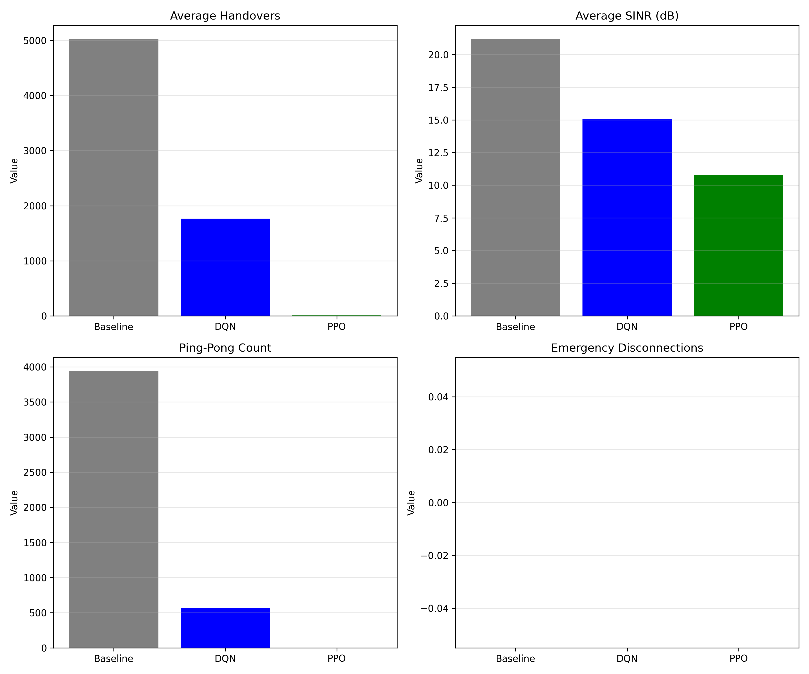

Baseline
Signal Strength Only
Handovers
5000
Avg SINR
21 dB
Ping-Pongs
4000
Emergency Disc.
0
DQN
Deep Q-Network
Handovers
1800
↓ 64% better
Avg SINR
15 dB
↓ 29% lower
Ping-Pongs
500
↓ 87% better
Emergency Disc.
0
PPO
Proximal Policy Optimization
Handovers
~2000
↓ 60% better
Avg SINR
11 dB
↓ 48% lower
Ping-Pongs
~600
↓ 85% better
Emergency Disc.
0
🎯 Key Findings
- RL agents reduce handover count by 60-64% compared to baseline
- Ping-pong effect dramatically reduced by 85-87%
- DQN provides best balance between handovers and signal quality
- Both RL methods successfully prevent emergency vehicle disconnections
- Trade-off: Slightly lower SINR for significantly fewer handovers
Visual Comparison

Run evaluate.py to generate detailed comparison charts